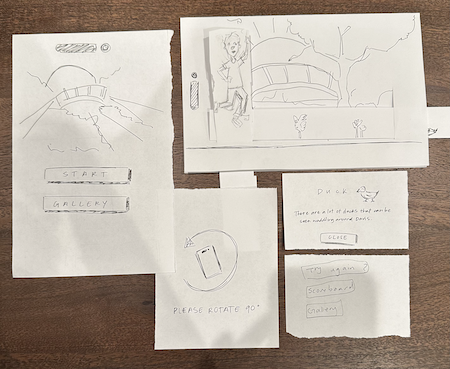

The paper prototype gave me a more concrete image of what my final product could look like. While it was still very rough and a early draft, like Professor Glenda said, the paper prototype definitely made me feel more empowered as a designer. We received a lot of good feddback and not talking definitely highlighted some pain points and areas of need. Additionally, it was cool being able to interact with Laura and Rheiana's prototype as it showed a different way to map overlays and the use of augmented reality. I also liked the exchanged comments we had as I feel that the feedback we gave each other was constructive!
